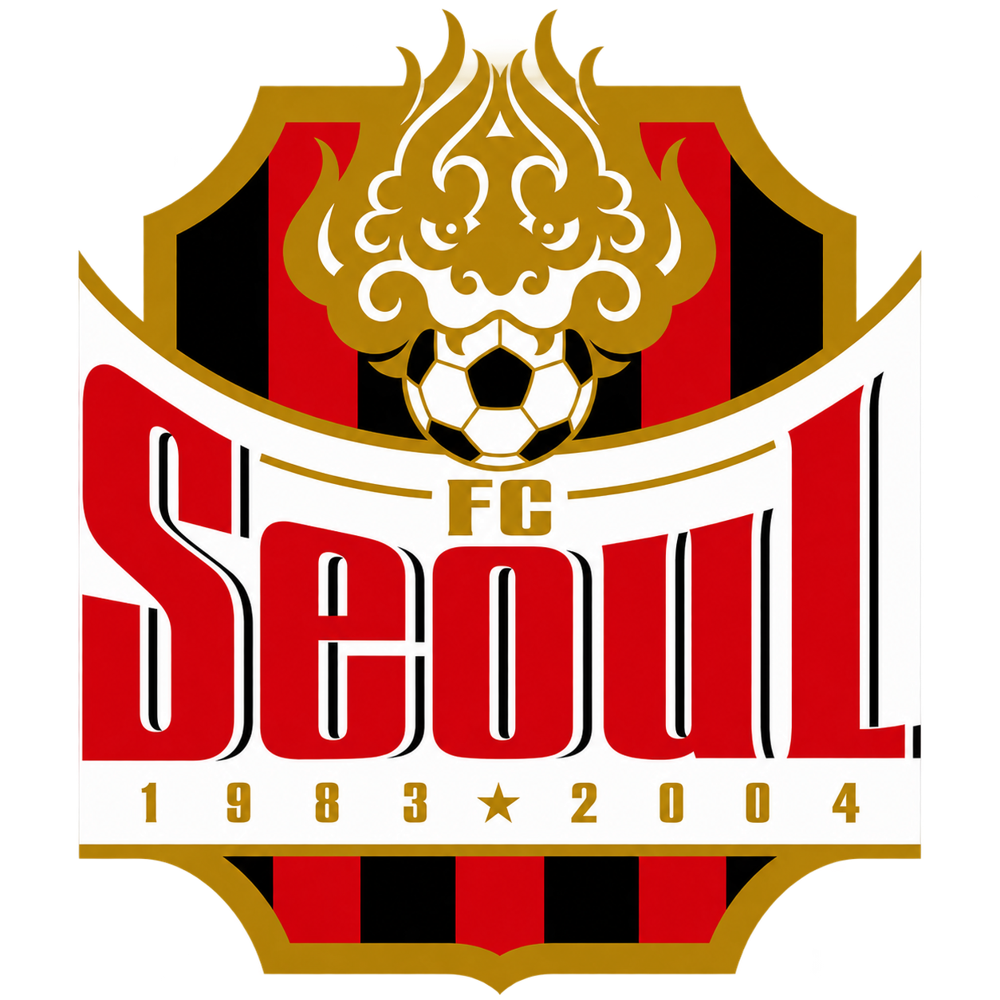
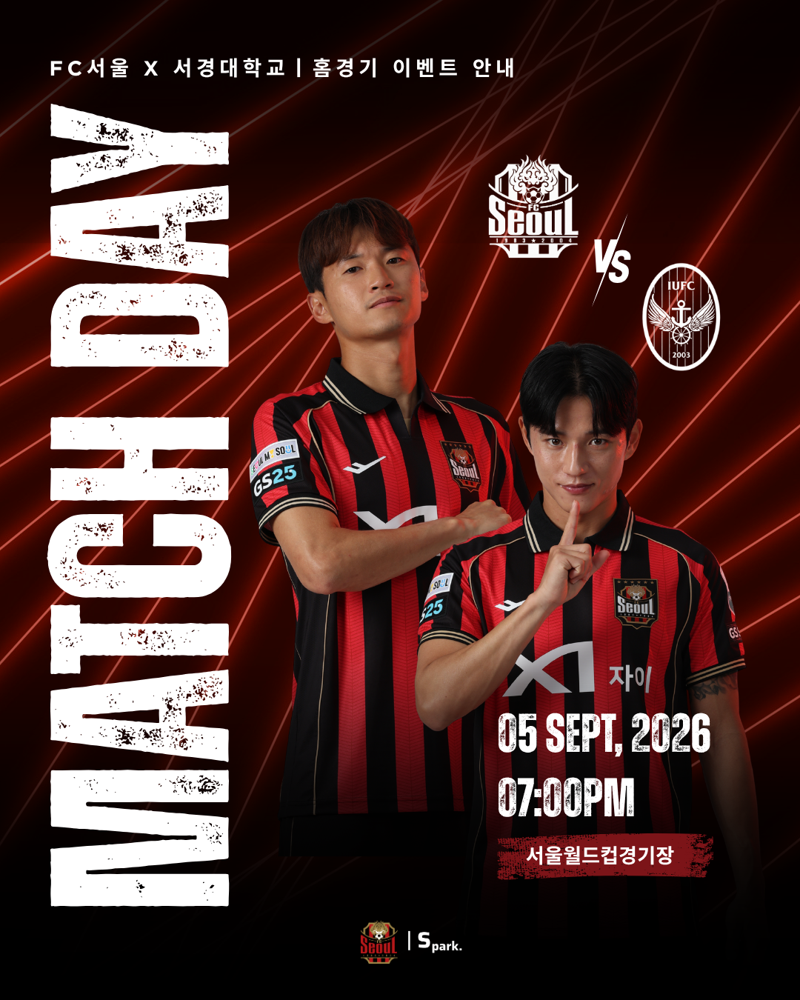
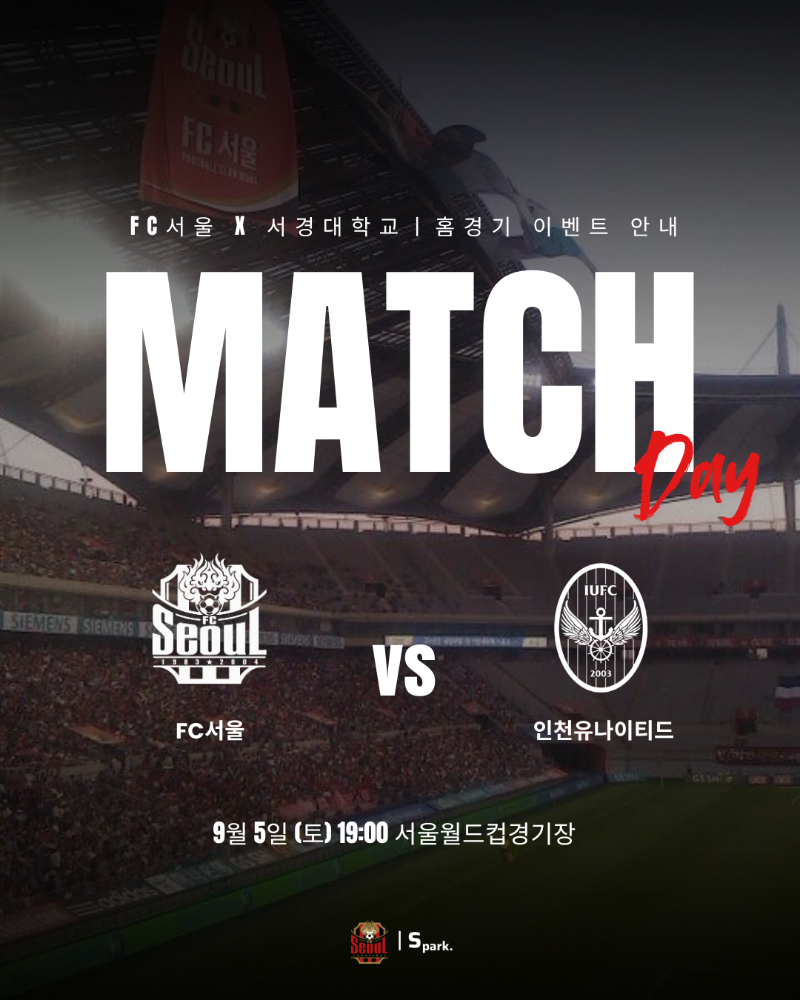
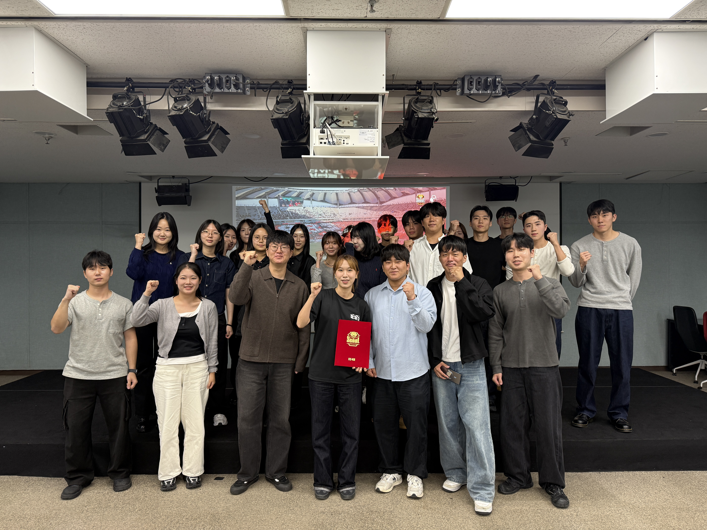

Project 02 · Industry Collaboration
FC서울
스포츠마케팅 산학협력 프로젝트
홈경기 모객 데이터 비교 분석부터 대학생 및 외국인 등 신규 관중 증대 전략을 위한 경쟁 PT까지 총괄 리더십을 발휘하여 전 과정을 지휘한 산학협력 프로젝트입니다.
PROJECT LEADER MATCH ATTENDANCE COMPETITIVE PT
1. 활동 내용 & 주요 역할
- 홈경기 모객 프로젝트: 9월과 11월 홈경기 모객 프로젝트 수행 후 결과 데이터를 비교·분석하여 최종 결과 보고 발표 진행 (14개 대학 중 총 3팀 시상)
- 신규 관중 증대 전략 경쟁 PT: 대학생 및 외국인 관중 유치를 위한 아이디어 경쟁 PT 개최 (주제별 1팀씩 총 2팀 시상)
- 담당 역할: 총괄 (Project Leader) — 프로젝트 방향성 설정, 팀원 역할 배분, 일정 관리 및 기획안 최종 조율 담당
2. 활동을 통해 배운 인사이트
조직 관리와 체계성의 중요성: 대규모 대외활동일수록 구성원들의 역할 배분이 명확해야 하며 체계적인 프로세스와 다양한 가치관을 존중하는 총괄 리더십이 핵심임을 체감했습니다.
모객 전략의 본질과 관객 심리: 단순히 열정적인 홍보와 노출만으로는 모객이 이뤄지지 않는다는 점을 배웠습니다. 어떤 끌림과 시선을 이끌어내느냐에 따라 참여도가 달라지며, 예상치 못한 파급력과 관객의 미묘한 심리를 다루는 기획의 정교함이 필수적임을 깨달았습니다.
넓어진 시야와 관점 확장: 14개 대학의 다채로운 아이디어를 접하고, 동일한 목표를 향해 모인 이들과 치열하게 논의하며 저만의 아이디어 한계를 넘어 사고의 지평을 한층 더 넓힐 수 있었습니다.
3. 활동 관련 이미지 (3장)
프로젝트 포스터 및 스태프/팀 활동 모습입니다.


